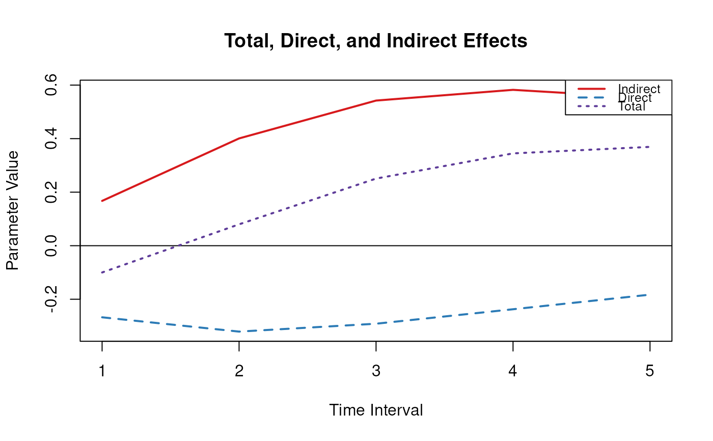

Plot Method for an Object of Class ctmedmed
Usage
# S3 method for class 'ctmedmed'
plot(x, col = NULL, legend_pos = "topright", ...)Examples
phi <- matrix(
data = c(
-0.357, 0.771, -0.450,
0.0, -0.511, 0.729,
0, 0, -0.693
),
nrow = 3
)
colnames(phi) <- rownames(phi) <- c("x", "m", "y")
# Range of time intervals ---------------------------------------------------
med <- Med(
phi = phi,
delta_t = 1:5,
from = "x",
to = "y",
med = "m"
)
plot(med)

#> $rect
#> $rect$w
#> [1] 0.7772935
#>
#> $rect$h
#> [1] 0.1293453
#>
#> $rect$left
#> [1] 4.382707
#>
#> $rect$top
#> [1] 0.6184468
#>
#>
#> $text
#> $text$x
#> [1] 4.76482 4.76482 4.76482
#>
#> $text$y
#> [1] 0.5861105 0.5537741 0.5214378
#>
#>